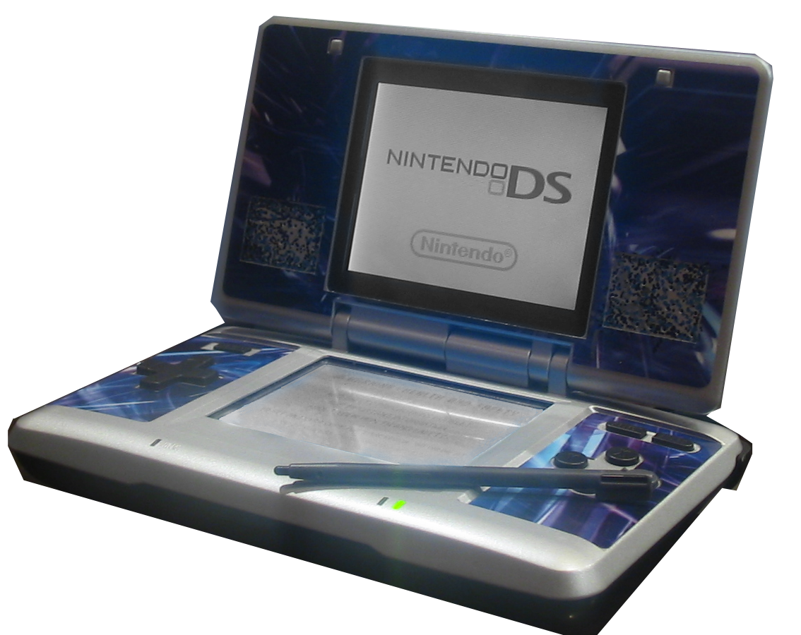

the nintendo ds family
History of the Systems
-
DS
- The original Nintendo DS, released in 2004, was revolutionary in the gaming console industry.
Standing for both "Developer's System" and "Dual-Screen", the DS was loaded with new
technology. It was one of the first systems to popularize the use of built-in folding dual screen,
including a lower touch screen and microphone. In addition, it included wireless communication
technology, allowing players to connect to one another without using a cable or connecting to the
same wireless network. The system even included technology that supported Nintendo's older system,
the GameBoy. Nintendo planned to release its Nintendo DS near the same time as Sony was
planning to release their "PlayStation Portable", or "PSP". Sony was a huge competitor for Nintendo.
Their PlayStation 2 was highly successful, and is now the best-selling game console of all time.
Nintendo's GameCube did not have this success, so many gamers suspected that the PSP would prevail
over the DS. Players mocked Nintendo's plans, especially when Nintendo announced that their
device would have a dual-screen system; they edited images of video game systems to have absurd
numbers of screens. Despite this mocking, the release of the Nintendo DS was proven one of
the most monumental system releases of all times. The dual-screen design appealed to all players,
ranging from those young, to those casual, and even to those advanced and devoted. As well, the
Nintendo DS was fairly affordable. It originally sold for $150, and less than a year after
its release, the price dropped to $130, making it even more accessible to the public than it was
before.

Source: Omega21. Blue skinned Nintendo DS. en.wikipedia.org
(https://en.wikipedia.org/wiki/Nintendo_DS#/media/File:BlueSkinnedDS.png)